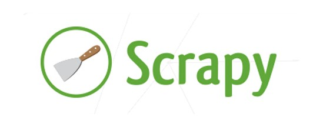

爬虫基本原理概述
1. 爬虫基本流程
爬虫基本工作流程是：发起请求、获取响应内容、解析响应内容、保存数据
( 1 ) 发起请求：通过HTTP库向目标站点发起请求，即发送一个 Request，请求可以包含额外的headers等信息，等待服务器响应。
( 2 ) 获取响应内容：如果服务器能正常响应，会得到一个 Response，Response 的内容便是所要获取的页面内容，类型可能有 HTML，Json 字符串，二进制数据（如图片视频）等类型。
( 3 ) 解析响应内容：得到的内容 可能是 HTML，可以用正则表达式、网页解析库进行解析。可能是Json，可以直接转为 Json 对象解析，可能是二进制数据，可以做保存或者进一步的处理。
( 4 ) 保存数据：保存形式多样，可以存为文本，也可以保存至数据库，或者保存特定格式的文件。
2. 请求与响应
浏览器发送消息给该网址所在的服务器，这个过程叫做 HTTP Request 请求。服务器收到浏览器发送的消息后，能够根据浏览器发送消息的内容，做相应处理，然后把消息回传给浏览器。这个过程叫做 HTTP Response 响应。 浏览器收到服务器的 Response 信息后，会对信息进行相应处理，然后展示。
3. 请求
( 1 ) 请求方式：主要有GET、POST两种类型，另外还有 HEAD、PUT、DELETE、OPTIONS 等
( 2 ) 请求 URL：URL 全称统一资源定位符，如一个网页文档、一张图片、一个视频等都可以用 URL 唯一来确定
( 3 ) 请求头：包含请求时的头部信息，如 User-Agent、Host、Cookies 等信息
( 4 ) 请求体：请求时额外携带的数据，如表单提交时的表单数据
4. 响应
( 1 ) 响应状态：有多种响应状态，如 200 代表成功、301 跳转、404 找不到页面、502服务器错误
( 2 ) 响应头：如内容类型、内容长度、服务器信息、设置 Cookie 等等
( 3 ) 响应体：最主要的部分，包含了请求资源的内容，如网页 HTML、图片二进制数据等
5. 抓取内容数据类型
( 1 ) 网页文本：如 HTML 文档、Json 格式文本等
( 2 ) 图片：获取到的是二进制文件，保存为图片格式
( 3 ) 视频：同为二进制文件，保存为视频格式即可
( 4 ) 其他数据：只要是能请求到的，一般都能获取
6. 解析内容的方式
直接处理、Json 解析、正则表达式、bs4、PyQuery 和 Path 等方式。如果遇到js渲染问题可以通过 分析 Ajax 请求、Selenium/WebDriver、Splash、PyV8和Ghost等来处理。
7. 数据的保存
( 1 ) 文本：纯文本、Json、Xml 等
( 2 ) 关系型数据库：如 MySQL、Oracle、SQL Server 等具有结构化表结构形式存储
( 3 ) 非关系型数据库：如 MongoDB、Redis 等 Key-Value 形式存储
( 4 ) 二进制文件：如图片、视频、音频等等直接保存成特定格式即可
scrapy的安装
scrapy 框架是一个大而全的爬虫框架，有了 scrapy 框架，beautifulsoup 和 requests 模块都用不上了，因为 scrapy 框架包含了这些模块。
1. Windows下的安装
在 Windows 系统中，使用 $ pip3 install scrapy 命令可以安装 scrapy。但是如果遇到 Twisted 模块不能被安装，就需要单独下载该模块。如果遇到 Twisted 模块安装不上，
( 1 ) 下载 python 版本对应的 Twisted 模块，根据 python 的位数和版本选择：https://www.lfd.uci.edu/~gohlke/pythonlibs/
( 2 ) 安装该 Twisted 模块
直接使用 $ pip install Twisted‑19.7.0‑cp38‑cp38m‑win_amd64.whl是不能安装的。pip 只支持从网络上的包管理库中找到这个模块下载下来。本地安装这个 .whl 文件是不支持的，需要先安装 wheel 模块：$ pip install wheel。然后，再安装本地 whl 文件：$ pip install Twisted‑19.7.0‑cp38‑cp38m‑win_amd64.whl
( 3 ) 安装 windows 中独有的 pywin32 模块：$ pip install pywin32
( 4 ) 安装 scrapy 模块：$ pip3 install scrapy
注意：截至目前，使用 $ pip3 install scrapy 是可以把所有依赖安装成功的，也就是说 Twisted 模块不再需要单独安装。另外，记得单独安装 pywin32 模块。
2. Linux下的安装
直接执行 pip3 install scrapy 命令 scrapy 框架依赖的所有模块和组件都安装了。
scrapy项目的创建
1. 创建scrapy项目
创建 scrapy 项目的命令：scrapy startproject 项目名称
执行这条指令后，会自动创建一个 scrapy_demo 目录，scrapy_demo 目录中有以下目录/文件：
├── scrapy.cfg
└── scrapy_demo
├── __init__.py
├── items.py
├── middlewares.py
├── pipelines.py
├── settings.py
└── spiders
settings.py ：也是配置文件（爬虫）
scrapy.cfg ：是主配置文件（上线部署）
spiders ：爬虫文件
middlewares.py ：中间件（当请求到来时统一处理）
items.py ：持久化（写在硬盘上、数据库、redis）
pipelines.py ：持久化
2. 创建爬虫应用
cd 项目名称
scrapy genspider chouti chouti.com
├── scrapy.cfg
└── scrapy_demo
├── __init__.py
├── items.py
├── middlewares.py
├── pipelines.py
├── settings.py
└── spiders
├── chouti.py
├── cnblogs.py
├── __init__.py
3. 启动爬虫项目
scrapy crawl chouti
scrapy crawl cnblogs
注意：默认情况下，只能启动一个爬虫。
scrapy详解
1. scrapy框架功能
( 1 ) 使用 twisted 下载页面
( 2 ) HTML 解析对象
( 3 ) 支持代理
( 4 ) 延迟下载
( 5 ) 去重
( 6 ) 深度和广度等
2. scrapy的整体架构

3. 组件执行流程

( 1 ) 引擎找到要执行的爬虫（scrapy crawl xxx会找到找到xxx爬虫名），执行爬虫的 start_requests 方法，并得到一个迭代器
( 2 ) 迭代器循环时会获取 request 对象，而 request 对象中封装了要访问的 url 和回调函数
( 3 ) 将所有 request 对象（任务）放到调度器中，用于以后被下载器下载
( 4 ) 下载器去调度器中获取要下载任务(就是 request 对象)，下载完成后执行回调函数
( 5 ) 回到 spider 的回调函数中（如果 yield Request() 是重新放到调度器中去，如果 yield Item() 对象会到 pipeline）
4. twisted
scrapy 框架依赖于 twisted，twisted 是一个基于事件循环的异步非阻塞模块（简而言之，一个线程同时可以向多个目标发送 http 请求）。其内部是基于事件循环机制来实现爬虫的并发。scrapy 在下载页面的时候使用的就是 twisted，所以我们至少得明白 twisted 的原理。
下面的例子使用的是 requests 模块，性能会低一些：
import requests
url_request = ['https://www.blueflags.cn/', 'https://segmentfault.com/', 'https://stackoverflow.com/']
for item in url_request:
'''
一个一个串行地等待
'''
response = requests.get(item)
print(response.text)
下面是 twisted 的例子：
'''
teisted:是一个基于事件循环的异步非阻塞模块，简而言之：也就是一个线程同时可以向多个目标发送http请求
1、阻塞：不等待，请求发出去不用等待结果，而是继续法下一个连接请求。也就是发送一个连接，马上发下一个连接请求。
import socket
sk = socket.socket()
sk.setblocking(False)
sk.connect((1.2.3.4,80))
import socket
sk = socket.socket()
sk.setblocking(False)
sk.connect((1.2.3.4,80))
……
2、异步：体现在回调，拿到结果后才会（执行回调）通知请求者
回调函数：
def callback(contents):
print(contents)
3、事件循环：循环检测，循环三个socket任务，检查其请求者的状态，是否连接成功，是否返回结果。
'''
from twisted.web.client import getPage, defer
from twisted.internet import reactor
# 第一部分：代理开始接收任务
def callback(contents): # content:kiku
pass
deferred_list = [] # 三个任务[(thanlon,kiku),(thanlon,yuqin)]
url_list = ['https://www.blueflags.cn/', 'https://segmentfault.com/', 'https://stackoverflow.com/']
for url in url_list:
deferred = getPage(bytes(url, encoding='utf-8'))
deferred.addCallback(callback) # 如果找到了，就告诉请求过来取
deferred_list.append(deferred)
# 代理执行完任务后停止
dlist = defer.DeferredList(deferred_list)
def all_done(arg):
reactor.stop()
dlist.addBoth(all_done) # 不管成功与否，我都会停下来
# 第三部分：代理开始处理
reactor.run()
( 1 ) twisted 非阻塞体现在：不等待，请求发出去不用等待结果，而是继续法下一个连接请求。也就是发送一个连接，马上发下一个连接请求
( 2 ) twisted 的异步体现在：拿到结果后才会（执行回调）通知请求者
( 3 ) twisted事件循环体现在：循环检测，循环三个 socket 任务，检查其请求者的状态，是否连接成功，是否返回结果
twisted 相对于 requests 并发效率提高了。
5. 响应与解析
( 1 ) 响应：request.text，request.encoding，request.body，request.request（当前响应是由哪个请求发起，请求中封装了要访问的 url 以及下载完成后执行哪个函数）
( 2 ) 解析（xpath）
| xpath | 解释 |
|---|---|
| // | 子子孙孙里面找 |
| / | 找儿子 |
| .// | 当前往下找子子孙孙 |
| //div[@属性名=''] | |
| //div/text | 取文本 |
| //div/@href | 取属性 |
| .extract() | 获取所有结果 |
| .extract_first() | 获取第一条结果 |
tag_list = response.xpath("//div[@href='x']/a")
for tag in tag_list:
tag.xpath('.//p/text()').extract_first()
( 3 ) 再次发请求
yield Request(url='xxx',callback=self.parse) # 只是把url和callback封装在一起，没有发起请求
6. pipeline持久化
对于本文第10部分 “ scrapy 爬取网页简单示例（猫眼电影）” 是存在缺点的，具体有如下两点：
( 1 ) 爬虫刚开始时，无法完成打开连接；爬虫关闭时，无法完成关闭连接
( 2 ) parse函数中应该是只做解析的，持久化部分应该交给另外的组件，也就是说分工是不明确
对于以上两个缺点，scrapy 也有对应的解决方案，可以使用 scrapy 中 pipeline 与 items。具体操作如下：
① 先写 pipeline 类
pipelines.py ：
class ScrapyPipelinePipeline(object): # 类名不是写死的，可自定义
def process_item(self, item, spider):
return item
② 写 Item 类
items.py ：
class ScrapyPipelineItem(scrapy.Item): # 类名不是写死的，可自定义
href = scrapy.Field()
title = scrapy.Field()
③ 配置
settings.py ：
ITEM_PIPELINES = {
'scrapy_pipeline.pipelines.ScrapyPipelinePipeline': 300,
}
④ 爬虫
yield Item对象
只要 yield Item 对象，就会自动执行 pipelines.py 中的 process_item 方法。执行 process_item 方法的时候就可以帮助我们做操作了。yield 执行一次 process_item 方法就会被调用一次。
以上四部分操作是可以解决分工不明确的缺点，对于第一个问题可以这样解决：
pipelines.py：
class ScrapyPipelinePipeline(object): # 类名不是写死的，可自定义
'''
方法执行顺序:__init__、open_spider、process_item、close_spider方法
'''
def __init__(self):
self.f = None
def open_spider(self, spider):
'''
爬虫开始执行时调用
:param spider:
:return:
'''
self.f = open('data.log', 'a')
def process_item(self, item, spider):
self.f.write(item['href'] + '\n')
return item
def close_spider(self, spider):
'''
爬虫关闭时被调用
:param spider:
:return:
'''
self.f.close()
将文件的路径写到配置文件 settings.py 中（pipeline 的五个方法）：
settings.py：
HREF_FILE_PATH = 'data.log'
pipeline.py：
# from scrapy_pipeline.settings import HREF_FILE_PATH#一般不导入文件
class ScrapyPipelinePipeline(object): # 类名不是写死的，可自定义
'''
源码内容：
第一步：
判断当前ScrapyPipelinePipeline类中是否含有from_crawler，如果有
obj = ScrapyPipelinePipeline.from_crawler(……)
如果没有：
obj = ScrapyPipelinePipeline()
第二步：
obj.open_spider(self, spider)
第三步：
obj.process_item(self, item, spider)、obj.process_item()，obj.process_item()……
第四步：
obj.close_spider(self, spider)
'''
def __init__(self, path):
self.f = None
self.path = path
@classmethod
def from_crawler(cls, crawler): # cls是当前类
'''
初始化的时候用于创建pipeline对象(不用实例化就可以创建)
:param crawler:
:return:
'''
path = crawler.settings.get('HREF_FILE_PATH') # 向所有的配置文件(自己的配置和内置的配置)找HREF_FILE_PATH
return cls(path)
def open_spider(self, spider):
'''
爬虫开始执行时调用
:param spider:
:return:
'''
self.f = open(self.path, 'a')
def process_item(self, item, spider):
self.f.write(item['href'] + '\n')
return item
def close_spider(self, spider):
'''
爬虫关闭时被调用
:param spider:
:return:
'''
self.f.close()
注意：Pipeline 类中最多有5个方法，在执行 process_item 时，返回的 item 的值交给 pipeline 的 process_item 方法。
如果要求持久化到数据库，再写一个 Pipeline 即可：
# -*- coding: utf-8 -*-
# from scrapy_pipeline.settings import HREF_FILE_PATH#一般不导入文件
class FilePipeline(object): # 类名不是写死的，可自定义
'''
源码内容：
第一步：
判断当前ScrapyPipelinePipeline类中是否含有from_crawler，如果有
obj = ScrapyPipelinePipeline.from_crawler(……)
如果没有：
obj = ScrapyPipelinePipeline()
第二步：
obj.open_spider(self, spider)
第三步：
obj.process_item(self, item, spider)、obj.process_item()，obj.process_item()……
第四步：
obj.close_spider(self, spider)
'''
def __init__(self, path):
self.f = None
self.path = path
@classmethod
def from_crawler(cls, crawler): # cls是当前类
'''
初始化的时候用于创建pipeline对象(不用实例化就可以创建)
:param crawler:
:return:
'''
print('File.from_crawler')
path = crawler.settings.get('HREF_FILE_PATH') # 向所有的配置文件(自己的配置和内置的配置)找HREF_FILE_PATH
return cls(path)
def open_spider(self, spider):
'''
爬虫开始执行时调用
:param spider:
:return:
'''
print('File.open_spider')
self.f = open(self.path, 'a+')
def process_item(self, item, spider):
print('file', item['href'])
self.f.write(item['href'] + '\n')
# return item # 交给下一个pipeline的process_item方法
# raise DropItem()
def close_spider(self, spider):
'''
爬虫关闭时被调用
:param spider:
:return:
'''
print('File.close_spider')
self.f.close()
class DbPipeline(object): # 类名不是写死的，可自定义
def __init__(self, path):
self.f = None
self.path = path
@classmethod
def from_crawler(cls, crawler): # cls是当前类
'''
初始化的时候用于创建pipeline对象(不用实例化就可以创建)
:param crawler:
:return:
'''
print('Db.from_crawler')
path = crawler.settings.get('HREF_DB_PATH') # 向所有的配置文件(自己的配置和内置的配置)找HREF_FILE_PATH
return cls(path)
def open_spider(self, spider):
'''
爬虫开始执行时调用
:param spider:
:return:
'''
print('Db.open_spider')
self.f = open(self.path, 'a')
def process_item(self, item, spider):
print('db', item['href'])
self.f.write(item['href'] + '\n')
return item
def close_spider(self, spider):
'''
爬虫关闭时被调用
:param spider:
:return:
'''
print('Db.close_spider')
self.f.close()
两个类的方法执行顺序是：(先实例化类)
File.from_crawler
File.from_crawler
Db.open_spider
Db.open_spider
File.process_item（在执行process_item的时候，先写到文件中，再写到数据库中）
File.process_item
File.process_item
File.process_item
db.close_spider
db.close_spider
如果不想让下一个 pipeline 运行，那么第一个 pipeline 的 process_spider 方法就不要 return item，这个时候我们可以使用异常。注意：第二个 pipeline 的其它方法还是可以执行的。
from scrapy.exceptions import DropItem
……
def process_item(self, item, spider):
print('file', item['href'])
self.f.write(item['href'] + '\n')
# return item # 交给下一个pipeline的process_item方法
raise DropItem()
pipeline 是所有爬虫公用的，如果想要给某个爬虫定制需要使用 spider 参数自己进行处理。下面是，使用 spider 参数的例子：
def open_spider(self, spider):
'''
爬虫开始执行时调用
:param spider:
:return:
'''
if spider.name=='cnblogs':
print('File.open_spider')
self.f = open(self.path, 'a+')
7. dupefilter去重
( 1 ) 默认的去重规则
对于访问过的就不再请求了。因为在执行 yield Request(…) 的时候，会先执行 request_seen 方法：
dupefilter.py：
def request_seen(self, request):
fp = self.request_fingerprint(request)#将url(request)转换成md5值，fp就是url的md5值
if fp in self.fingerprints:#fingerprints是一个集合，不能重复
return True#表示已经访问过了
self.fingerprints.add(fp) # 未访问过，把fp加进集合了
if self.file:#如果有文件也会把访问记录写到文件中
self.file.write(fp + os.linesep)
系统的 dupefilter，但是一般公司不用。
( 2 ) 自定义去重规则
① 修改默认的去重规则：
settings.py：
DUPEFILTER_CLASS = 'scrapy_dupefilter.dupefilters.MyDupeFilter'
② 初步自定义去重规则
dupefilters.py：
# -*- coding: utf-8 -*-
from scrapy.dupefilters import BaseDupeFilter
class MyDupeFilter(BaseDupeFilter):
def __init__(self):
self.visted_url = set()
@classmethod
def from_settings(cls, settings):
'''
内部会先检查有没有from_settings，如果有可以通过cls()拿到对象，如果没有自己实例化
:param settings:
:return:
'''
return cls()
def request_seen(self, request):
'''
:param request:
:return:# None表示都没有访问过,会再次访问,也就是没有去重
'''
if request.url in self.visted_url: # 如果在访问过的集合中
return True #
self.visted_url.add(request.url)
def open(self): # can return deferred
pass
def close(self, reason): # can return a deferred
pass
③ 唯一标识的处理
但是用 url 做唯一标识不好，因为如果是效果一样的 url 可能被当作不同的 url，如：
url = 'https://www.blueflags.cn?k1=123&k2=456'
url2 = 'https://www.blueflags.cn?k1=456&k2=123'
如何处理相同效果的 url：
# -*- coding: utf-8 -*-
from scrapy.utils.request import request_fingerprint
from scrapy.http import Request
url = 'https://www.blueflags.cn?k1=123&k2=456'
req = Request(url=url) # 用Request做封装
url2 = 'https://www.blueflags.cn?k1=456&k2=123'
req2 = Request(url=url)
fd = request_fingerprint(request=req)
fd2 = request_fingerprint(request=req2)
print(fd)
print(fd2)
'''
c54f8702bcb7065bfb901f509fd6de6e60d93db2
c54f8702bcb7065bfb901f509fd6de6e60d93db2
'''
④ 自定义去重规则的完善
# -*- coding: utf-8 -*-
from scrapy.dupefilters import BaseDupeFilter
from scrapy.utils.request import request_fingerprint
class MyDupeFilter(BaseDupeFilter):
def __init__(self):
self.visted_fd = set()#这里只是放到集合中，其实是可以放到redis中的
@classmethod
def from_settings(cls, settings):
'''
内部会先检查有没有from_settings，如果有可以通过cls()拿到对象，如果没有自己实例化
:param settings:
:return:
'''
return cls()
def request_seen(self, request):
'''
:param request:
:return:# None表示都没有访问过,会再次访问,也就是没有去重
'''
fd = request_fingerprint(request=request)
if fd in self.visted_fd: # 如果在访问过的集合中
return True
self.visted_fd.add(fd)
def open(self): # can return deferred
print('爬虫开始的时候')
def close(self, reason): # can return a deferred
print('爬虫开始的时候')
# def log(self, request, spider): # 记录日志的
# print('日志')
注意：如果想要遵循去重规则，需要满足两点：在 request_seen 中编写正确的逻辑 dont_filter = False
8. 深度限制
( 1 ) 查看 depth
import scrapy
class CnblogsSpider(scrapy.Spider):
name = 'cnblogs'
allowed_domains = ['cnblogs.com']
start_urls = ['http://cnblogs.com/']
def parse(self, response):
print(response.request.url, response.meta)
'''
response.meta = {
'download_timeout': 180.0,
'download_slot': 'cnblogs.com',
'download_latency': 0.07253193855285645,
'redirect_times': 1,
'redirect_ttl': 19,
'redirect_urls': ['http://cnblogs.com/'],
'redirect_reasons': [301]
}
'''
print(response.request.url, response.meta.get('depth')) # meta中是没有depth,所以或取到的是None
( 2 ) 深度限制
settings.py：
# 限制深度
DEPTH_LIMIT = 3 # 只能访问3层以内
9. 处理cookie
( 1 ) 拼接字典
# -*- coding: utf-8 -*-
from urllib.parse import urlencode
d = {
'k1': 'v1',
'k2': 'v2'
}
ret = urlencode(d)
print(ret) # k1=v1&k2=v2
( 2 ) 处理 cookie 方式一
① 携带 cookie
yield Request(
url='https://dig.chouti.com/login',
method='POST',
body='password=123456&loginType=2&phone=%2B8618512152005',
# body=urlencode({
# 'password': 2232323232,
# 'loginType': 2,
# 'phone': +8618512152001
# }),
cookies=self.cookie_dict,
headers={
'Content-Type': 'application/x-www-form-urlencoded; charset=UTF-8'
},
callback=self.check_login
)
② 解析 cookie
# 去响应头中获取cookie,cookie保存在cookie_jar对象
cookie_jar = CookieJar()
cookie_jar.extract_cookies(response, response.request)
for i, v in cookie_jar._cookies.items():
print(i, v)
# 去对象中将cookie解析到字典
for k, v in cookie_jar._cookies.items():
for i, j in v.items():
for m, n in j.items():
self.cookie_dict[m] = n.value
# print(cookie_dict)
处理 cookie 的所有代码：
settings.py：
USER_AGENT = 'Mozilla/5.0 (X11; Linux x86_64) AppleWebKit/537.36 (KHTML, like Gecko) Chrome/76.0.3809.132 Safari/537.36'
chouti.py：
# -*- coding: utf-8 -*-
import scrapy
from scrapy.http.cookies import CookieJar
from scrapy.http import Request
from urllib.parse import urlencode
class ChoutiSpider(scrapy.Spider):
name = 'chouti'
allowed_domains = ['dig.chouti.com']
start_urls = ['https://dig.chouti.com']
cookie_dict = {}
def parse(self, response):
print(response)
'''
第一次访问抽屉的时候返回的内容response
:param response:
:return:
'''
'''
去响应头中获取cookie
'''
# 去响应头中获取cookie,cookie保存在cookie_jar对象
cookie_jar = CookieJar()
cookie_jar.extract_cookies(response, response.request)
for i, v in cookie_jar._cookies.items():
print(i, v)
# 去对象中将cookie解析到字典
for k, v in cookie_jar._cookies.items():
for i, j in v.items():
for m, n in j.items():
self.cookie_dict[m] = n.value
# print(cookie_dict)
yield Request(
url='https://dig.chouti.com/login',
method='POST',
body='password=123456&loginType=2&phone=%2B8618512152005&NECaptchaValidate=54qajoVtRONV-Pbu87QdaDAK2XjYVi-HdWYP8emDquaYO7N1Felra4dWFa5uzV6J0tHE5u74PMCmpKrBxJgwhsObcoT1ufv5BkbSub6f4kLxXfUx5WdSxTjZ7K2YPFR1HSpIQnWVr6OXq2fWdJ7C.MeVCvGscNXkX-t4DHKp8gbGtT9SZKA07zefpl101iRG0hmPNK.xBQViXsGPZAS2f.vLWVa8PXPbZ.Y-.uwGfzXCcF5F8UfT8vcIZF7Co1kJ9Bgo-82mLyyt4v6sFfWjUx_NvChvngrSy1ujoHAFTreiXNswonNkcNfCWMOGHRzAxMjGDqtzgdMmf1e55NWCRiAw-dZwSue.ERa8MXQeHIGtnQ-lJASGlWA6JolrmWGEovLrG.Ctrpk6d40xLk0EETzOb067taEoHvZGnLi2Y4tPc00qgA0iKYbKVQp7YbMSP2OKcxI-zReaEwDAVCNKLuBj7fUCP04Sb4B1ozK_gnmAj7i72AE4KlskWPS3',
# body=urlencode({
# 'password': 2232323232,
# 'loginType': 2,
# 'phone': +8618512152001
# }),
cookies=self.cookie_dict,
headers={
'Content-Type': 'application/x-www-form-urlencoded; charset=UTF-8'
},
callback=self.check_login
)
def check_login(self, response):
'''
登录成功后的回调函数
:param response:
:return:
'''
print(response.text)
yield Request(
url='https://dig.chouti.com/',
cookies=self.cookie_dict,
callback=self.index
)
def index(self, response):
news_list = response.xpath('//div[@id="content-list"]/div[@class="item"]')
for new in news_list:
link_id = new.xpath('.//div[@class="part2"]/@share-linked').extract_first()
yield Request(
url='http://dig.chouti.com/link/vote?linksId=%s' % (link_id),
method='POST',
cookies=self.cookie_dict,
callback=self.check_result
)
page_list = response.xpath('//div[@id="dig_lcpage"]//a/@href').extract()
for page in page_list:
page = 'https://dig.chouti.com' + page
yield Request(url=page, callback=self.index) # 翻页点赞
def check_result(self, response):
print(response.text)
( 3 ) 处理 cookie 方式二
加上 meta，在 meta 中写上：
cookie_jar = True
10. 起始请求定制
( 1 ) 内部原理
在爬虫中第一步没有执行 parse 方法，而是读取 start_urls，把每个 url 都封装成一个 request 对象，先执行的是 start_requests 方法。然后把 request 对象交给调度器。
( 2 ) scrapy引擎到爬虫中取起始url的步骤
① 调用 start_requests 并获取返回值
② v = iter(返回值)
③ req = 执行 v.__next__()，req2 = 执行 v.__next__()，req3 = 执行 v.__next__()。
④ 请求对象 request 全部放到调度器中
( 3 ) 可迭代器转换为可迭代对象
# 可迭代对象转换为迭代器
l = [1, 2, 3]
print(iter(l)) # <list_iterator object at 0x7f9f9fa1b358>
# -*- coding: utf-8 -*-
'''
def func():
yield 1
yield 2
yield 3
l = func() # l是生成器，生成器既是生成器也是迭代器
# 让生成器变成迭代器，不再是生成器
print(iter(l)) # <generator object func at 0x7f64037d46d8>
v = l.__next__()
print(v)
'''
def get_all(arg):
data = iter(arg)
print(data.__next__())
( 4 ) 代码实现
class ChoutiSpider(scrapy.Spider):
name = 'chouti'
allowed_domains = ['dig.chouti.com']
start_urls = ['https://dig.chouti.com']
cookie_dict = {}
# 引擎第一步就是调用start_requests获取起始url
# 如果我们写了优先级最高
def start_requests(self):
'''
# 第一种方式
# 引擎调用start_requests方法得到的是生成器,得到生成器后一个个拿到request,内部调用__next__方法
for url in self.start_urls:
yield Request(url=url)
'''
'''
#第二种方式
'''
for url in self.start_urls:
req_list = []
req_list.append(Request(url=url))
return req_list
( 5 ) 定制：可以去 redis 中获取
11. 下载中间件
在下载的过程中，可以对请求和响应子定制一些操作。
( 1 ) 中间件的执行顺序
自定义中间件：
mds.py：
# -*- coding: utf-8 -*-
class Mds1(object):
def process_request(self, request, spider):
print('Mds1.process_request', request)
return None
def process_response(self, request, response, spider):
print('Mds1.process_response',response)
return response
class Mds2(object):
def process_request(self, request, spider):
print('Mds2.process_request', request)
return None
def process_response(self, request, response, spider):
print('Mds2.process_response', request,response)
return response
使用自定义的中间件还需要修改配置文件：
seetting.py：
DOWNLOADER_MIDDLEWARES = {
# 'scrapy_middleware.middlewares.ScrapyMiddlewareDownloaderMiddleware': 543,
# 分值小的先执行
'scrapy_middleware.mds.Mds1': 1,
'scrapy_middleware.mds.Mds2': 2,
}
qikeyishu.py：
import scrapy
from scrapy.http.request import Request
class QikeyishuSpider(scrapy.Spider):
name = 'qikeyishu'
allowed_domains = ['cnblogs.com']
start_urls = (
'https://www.cnblogs.com/',
)
def start_requests(self):
'''
自己定制起始url,如果没有写,url会使用默认的start_urls
:return:
'''
url = 'https://www.cnblogs.com/qikeyishu/'
yield Request(url=url, callback=self.parse, )
def parse(self, response):
print('response', response) # response在中间件类执行process_response方法的时候有的
thanlon@vivobook:~/PycharmProjects/scrapy_middleware$ scrapy crawl qikeyishu --nolog
Mds1.process_request <GET https://www.cnblogs.com/qikeyishu/>
Mds2.process_request <GET https://www.cnblogs.com/qikeyishu/>
Mds1.process_request <GET https://www.cnblogs.com/robots.txt>
Mds2.process_request <GET https://www.cnblogs.com/robots.txt>
Mds2.process_response <GET https://www.cnblogs.com/robots.txt> <200 https://www.cnblogs.com/robots.txt>
Mds1.process_response <200 https://www.cnblogs.com/robots.txt>
Mds2.process_response <GET https://www.cnblogs.com/qikeyishu/> <200 https://www.cnblogs.com/qikeyishu/>
Mds1.process_response <200 https://www.cnblogs.com/qikeyishu/>
response <200 https://www.cnblogs.com/qikeyishu/>
( 2 ) 中间件截获下载的任务，伪造结果，不去中间件下载
def process_request(self, request, spider):
print('Mds1.process_request', request)
# return HtmlResponse(url='www.xxx.com', status=200, headers=None, body=b'thanlon')
( 3 ) 中间件截获下载的任务，不去中间件下载，自己下载
def process_request(self, request, spider):
print('Mds1.process_request', request)
# return HtmlResponse(url='www.xxx.com', status=200, headers=None, body=b'thanlon')
import requests
ret = request.get(request.url) # ret.content是字节
return HtmlResponse(url=request.url, status=200, headers=None, body=ret.content) # 告诉去请求的地址下载了,但结果是自己伪造的
( 4 ) 中间件返回 Request 对象
def process_request(self, request, spider):
print('Mds1.process_request', request)
'''
1. 返回Response
'''
# return HtmlResponse(url='www.xxx.com', status=200, headers=None, body=b'thanlon')
import requests
# ret = request.get(request.url) # ret.content是字节
# return HtmlResponse(url=request.url, status=200, headers=None, body=ret.content) # 告诉去请求的地址下载了,但结果是自己伪造的
'''
2. 返回request
'''
# return Request('https://www.cnblogs.com/qikeyishu/')#自己一个请求自己
'''
( 5 ) 中间件把请求丢掉，抛出异常
def process_request(self, request, spider):
print('Mds1.process_request', request)
'''
1. 返回Response
'''
# return HtmlResponse(url='www.xxx.com', status=200, headers=None, body=b'thanlon')
import requests
# ret = request.get(request.url) # ret.content是字节
# return HtmlResponse(url=request.url, status=200, headers=None, body=ret.content) # 告诉去请求的地址下载了,但结果是自己伪造的
'''
2. 返回request
'''
# return Request('https://www.cnblogs.com/qikeyishu/')#自己一个请求自己
'''
3. 抛出异常,把请求丢弃掉,可以抛出异常
'''
from scrapy.exceptions import IgnoreRequest
raise IgnoreRequest
中间件中的这三种情况都不做，一般我们做的是对请求信息的加工。
( 6 ) 对请求信息的加工
scrapy 默认是有对请求信息加工的，在 scrapy 框架的 usesragent.py 模块中：
useragent.py：
class UserAgentMiddleware(object):
"""This middleware allows spiders to override the user_agent"""
def __init__(self, user_agent='Scrapy'):
self.user_agent = user_agent
@classmethod
def from_crawler(cls, crawler):
o = cls(crawler.settings['USER_AGENT'])
crawler.signals.connect(o.spider_opened, signal=signals.spider_opened)
return o
def spider_opened(self, spider):
self.user_agent = getattr(spider, 'user_agent', self.user_agent)
def process_request(self, request, spider):
if self.user_agent:
request.headers.setdefault(b'User-Agent', self.user_agent)
加载了配置文件 settings.py 文件中定义的 USER_AGENT，所以我们可以通过修改配置文件，来达到定义请求头的目的。
settings.py：
# USER_AGENT = 'scrapy_middleware (+http://www.yourdomain.com)'
USER_AGENT = 'Mozilla/5.0 (X11; Linux x86_64) AppleWebKit/537.36 (KHTML, like Gecko) Chrome/77.0.3865.75 Safari/537.36'
mds.py：
# -*- coding: utf-8 -*-
from scrapy.http import HtmlResponse, Request
class Mds1(object):
def process_request(self, request, spider):
print('Mds1.process_request', request)
'''
1. 返回Response
'''
# return HtmlResponse(url='www.xxx.com', status=200, headers=None, body=b'thanlon')
import requests
# ret = request.get(request.url) # ret.content是字节
# return HtmlResponse(url=request.url, status=200, headers=None, body=ret.content) # 告诉去请求的地址下载了,但结果是自己伪造的
'''
2. 返回request
'''
# return Request('https://www.cnblogs.com/qikeyishu/')#自己一个请求自己
'''
3. 抛出异常,把请求丢弃掉,可以抛出异常
'''
# from scrapy.exceptions import IgnoreRequest
# raise IgnoreRequest
'''
4. 对请求进行加工
'''
request.hraders[
'USER_AGENT'] = 'Mozilla/5.0 (X11; Linux x86_64) AppleWebKit/537.36 (KHTML, like Gecko) Chrome/77.0.3865.75 Safari/537.36'
def process_response(self, request, response, spider):
print('Mds1.process_response', response)
return response
def process_exception(self, request, exception, spider):
pass
class Mds2(object):
def process_request(self, request, spider):
print('Mds2.process_request', request)
return None
def process_response(self, request, response, spider):
print('Mds2.process_response', request, response)
return response
def process_exception(self, request, exception, spider):
pass
( 7 ) 使用 from_crawler 类方法创建对象
mds.py：
class Mds1(object):
@classmethod
def from_crawler(cls, crawler):
'''
如果有这个方法可以自己创建对象，如果没有可以自己创建对象
:param crawler:
:return:
'''
# This method is used by Scrapy to create your spiders.
s = cls()
return s
( 8 ) 应用：user-agent、代理
12. 爬虫中间件
( 1 ) process_start_requests方法
process_start_requests 是 用来读取起始返回的生成器，然后一个一个再返回。把生成器 start_requests 方法返回的 yield Request(url=url, callback=self.parse, ) 传到爬虫中间件类的 process_start_requests 方法的参数 start_requests 中。在 process_start_requests 方法中又返回生成器。
process_start_requests方法只在爬虫启动时执行一次。对于两个爬虫中间件，起始url交给第一个中间件循环一遍再交给第二个中间件循环一遍。
( 2 ) process_spider_input 和 process_spider_output
刚开始进来执行 process_start_requests，把起始 url 拿到后放到调度器中。调度器拿着 url 要去下载器下载，下载完成后， 经过下载中间件，然后到了引擎。引擎会把结果交给爬虫中间件，执行爬虫中间件的 process_spider_input 方法。执行完该方法后执行回调函数，回调函数可以 yield item 还可以 yield Request。当 yield item 或 yield Request 之后，会执行爬虫中间件中所有的 process_spider_output 方法，执行完 process_spider_output 方法后到引擎中。引擎会拿去重规则，放到调度器中或者放到 item pipeline。
( 3 ) 爬虫中间件的实现
mds.py：
# -*- coding: utf-8 -*-
class Sd1(object):
@classmethod
def from_crawler(cls, crawler):
# This method is used by Scrapy to create your spiders.
s = cls()
return s
def process_spider_input(self, response, spider):
'''
:param response:下载器帮助我们下载下来的结果，是经过所有下载中间件的process_response,
然后交给下一个process_spider_input。都执行完成后，交给回调函数。回调函数可以yield item
或yield Request,当yield之后就会调用process_spider_output
:param spider:
:return:
'''
return None
def process_spider_output(self, response, result, spider):
'''
所以process_spider_output有两个参数
:param response:上一次下载的结果
:param result:yield新的Request()对象
:param spider:
:return:
'''
for i in result: # yield item或yield Request之后还可以再yield一个个返回,间接一个个返回
yield i
def process_spider_exception(self, response, exception, spider):
# Called when a spider or process_spider_input() method
# (from other spider middleware) raises an exception.
# Should return either None or an iterable of Request, dict
# or Item objects.
pass
# 只在爬虫启动时执行一次
def process_start_requests(self, start_requests, spider):
# Must return only requests (not items).
for r in start_requests:
yield r
class Sd2(object):
@classmethod
def from_crawler(cls, crawler):
# This method is used by Scrapy to create your spiders.
s = cls()
return s
def process_spider_input(self, response, spider):
# Called for each response that goes through the spider
# middleware and into the spider.
# Should return None or raise an exception.
return None
def process_spider_output(self, response, result, spider):
# Called with the results returned from the Spider, after
# it has processed the response.
# Must return an iterable of Request, dict or Item objects.
for i in result:
yield i
def process_spider_exception(self, response, exception, spider):
pass
def process_start_requests(self, start_requests, spider):
for r in start_requests:
yield r
settings.py：
SPIDER_MIDDLEWARES = {
# 'scrapy_middleware.middlewares.ScrapyMiddlewareSpiderMiddleware': 543,
'scrapy_middleware.sd.Sd1': 1,
'scrapy_middleware.sd.Sd2': 2,
}
( 4 ) 爬虫中间件的应用：深度、优先级。
13. 定制命令
( 1 ) 单爬虫运行
start.py
from scrapy.cmdline import execute
if __name__ == '__main__':
execute(['scrapy', 'crawl', 'qikeyishu', '--nolog'])
( 2 ) 多爬虫运行（单线程运行多个爬虫）
① 在 spider 同级目录创建一个目录，目录名可以自定义，我这里用 commands

② 在 commands 目录下创建 crawlall.py 文件
crawlall.py：
# -*- coding: utf-8 -*-
from scrapy.commands import ScrapyCommand
class Command(ScrapyCommand):
requires_project = True
def syntax(self):
'''
语法支持,命令的提示,scrapy crawlall --help
:return:
'''
return '[options]'
def short_desc(self):
'''
命令的介绍,可通过crapy --help
:return:
'''
return 'Run all of the spiders'
def run(self, args, opts):
spider_list = self.crawler_process.spiders.list() # 找到所有爬虫
# print(spider_list)
for name in spider_list: # 找到爬虫后循环这两个爬虫
self.crawler_process.crawl(name, **opts.__dict__) # 添加两个爬虫任务
self.crawler_process.start()
③ 在 settings.py 中添加配置 COMMANDS_MODULE='项目名称.目录名称'
# 自定制命令目录
COMMANDS_MODULE = 'scrapy_make_command.commands'
④ 在项目目录执行命令：scrapy crawlall
想要执行 start.py 脚本也去执行所有爬虫的，可以这样：
start.py：
# -*- coding: utf-8 -*-
from scrapy.cmdline import execute
if __name__ == '__main__':
# execute(['scrapy', 'crawl', 'qikeyishu', '--nolog'])
execute(['scrapy', 'crawlall', '--nolog'])